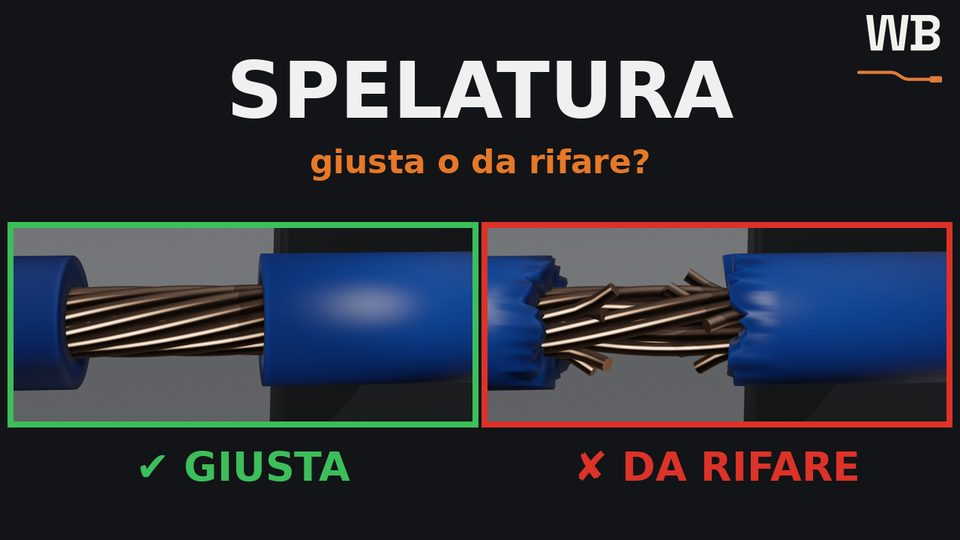
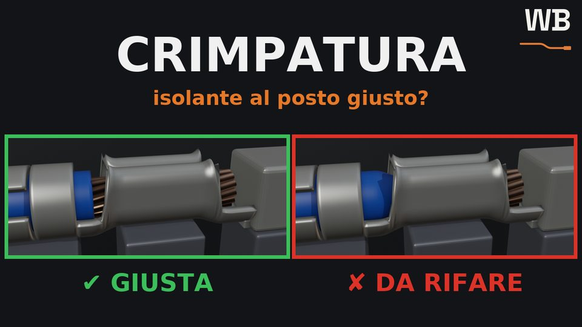
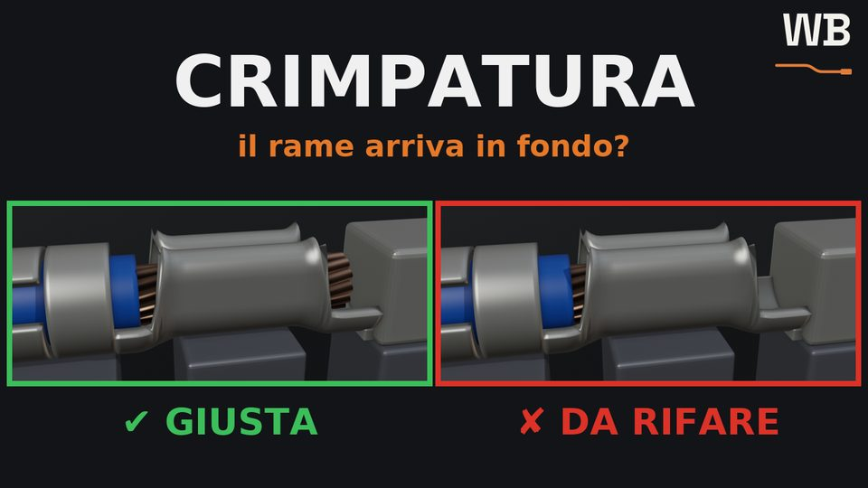
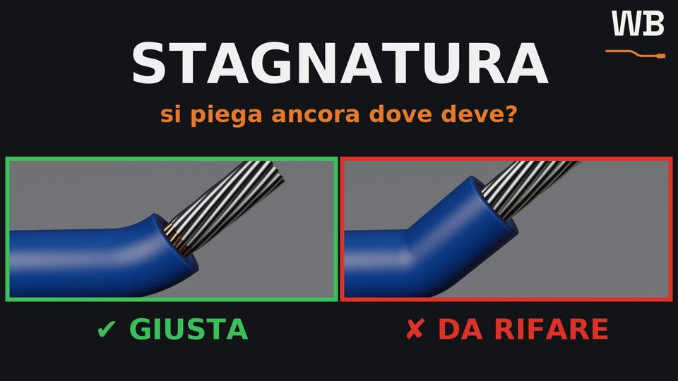

The WireBench handbook · harnesses since 1978
The Harness Maker's Handbook
Good or rework: how to make and inspect electrical wiring harnesses, situation by situation.
Cutting, wire stripping, crimping, soldering, connectors, protection, testing and repair: a practical guide for people who build wiring harnesses at the bench. We wrote it at Nuova Elettronica in Avigliana, near Turin, Italy, where we have been making wiring harnesses since 1978.
In preparation: Italian edition first, English edition in preparation.

Contact pushed straight in until it clicks and does not move in the pull test, good; contact not locked that backs out of the cavity, rework. Open on YouTube The video loads from YouTube only when you press the button.
What is in the handbook
- Wire stripping: removing the insulation without nicking the conductor or cutting strands.
- Crimping: choosing contact and tool, crimping, checking and spotting the typical defects.
- Soldering, splices and connectors: the connections of a harness, step by step.
- Inspection and testing: how to tell, by looking at it, whether a harness is good or must be reworked.
For people starting out in a harness shop, for the harness maker who wants a reference and for those who train operators. See the chapter list →
The handbook videos
Each video shows the same job done right and done wrong, in slow motion. The videos are in Italian, with on-screen captions; new videos on the WireBench Lab channel.
-

Chapter 7
Wire stripping: good or rework? How to spot cut strands (ch. 7)
The same strip done twice: partial strip with the insulation slug left on, good; with the blade closed too far, cutting strands, rework.
-

Chapter 11
Crimping contacts: insulation under the wings? Good or rework (ch. 11)
Conductor and insulation in the right zones of the contact, good; insulation caught in the conductor crimp because the strip is too short, rework.
-

Chapter 12
Crimping: copper not reaching the end? How to spot it (ch. 12)
Strand tips visible past the wings, good; conductor that does not reach the end of the contact because the strip is too short, rework.
-

Chapter 12
Crimping: strands outside the contact? Why it is rework (ch. 12)
Compact strands all inside the wings, good; two strands opened during stripping left outside the wings, rework.
-

Chapter 7
Wire stripping: conductor nicked by the blade? Good or rework (ch. 7)
The same full hand strip done twice: blade set for the wire size, cutting only the insulation, good; blade too deep, leaving ring marks on the strands, rework.
-

Chapter 8
Tinning wires: solder under the insulation? The bend test (ch. 8)
Short tinning that stops before the insulation, good; solder wicked under the insulation that stiffens the wire, found with the bend test, rework.
-

Chapter 14
Ferrules on stranded wire: strands outside the collar? Good or rework (ch. 14)
Strands gathered all inside the ferrule with the insulation at the bottom of the collar, good; two strands left outside the collar and bent back, rework.
-

Chapter 16
Soldering a solder cup: too much solder? The five looks (ch. 16)
Solder up to the rim of the cup with the wire still visible, good; solder overflowing into a ball that hides the conductor, rework.
-
Chapter 19
Inserting contacts into a connector: until it clicks, then the pull test (ch. 19)
Contact pushed straight in until it clicks and does not move in the pull test, good; contact not locked that backs out of the cavity, rework.
WireBench Lab
Classic wiring harness repairs and replicas
Does your classic car or motorcycle have a damaged harness, and no replacement on the market? We repair it, or we build a new one from your original: same lengths, same routing, every terminal in its place.
- We mostly work on Italian cars and motorcycles, including rare models that nobody reproduces.
- We work on the wiring harness only, not on the vehicle's electrical system.
- Send us photos: the first check on your photos is free.
- Price by quote, case by case. 12-month warranty on our workmanship.
See how we work
On the WireBench Lab YouTube channel (@wirebenchlab) we film our bench work: just hands, tools and harness.